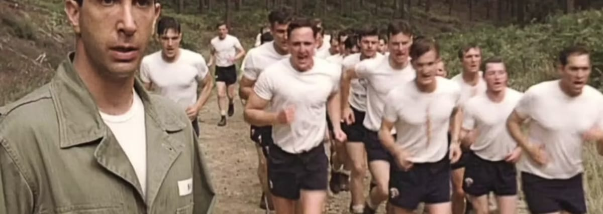
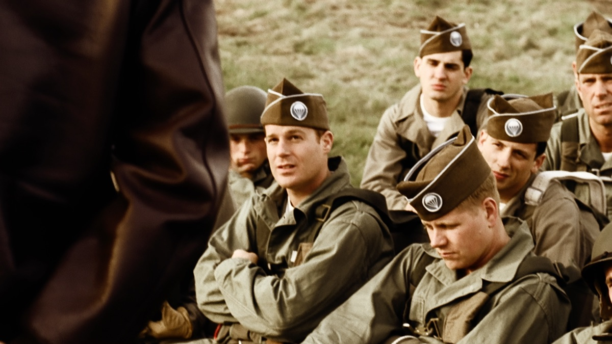

HERBERT SOBEL
索贝尔
用压力建立标准他盯住细节、施加惩罚，把“必须合格”贯彻到每一天。但演习中的失误，使士兵开始怀疑：这套标准是否也能转化成战场上的判断力？[3]

战斗还没有开始，信任已经接受考验。
从托科阿的山路，到诺曼底出发前的夜晚。
第一集把大量时间留给训练，因为连队的体能、纪律和相互信任，就是在这里形成的。Sobel 把 E 连练得出色，Winters 则逐渐赢得士兵的信任；当演习暴露指挥问题，这两种权威开始发生冲突。[1]
本页解读 这一集可以沿着三个问题来读：共同吃苦怎样形成归属感？军衔如何获得服从？什么又能让士兵愿意跟随？
沿着八个关键场景，读懂这一集的因果。
本集先来到 1944 年的英国，再回望 1942 年开始的训练。
严苛训练 → 形成凝聚力 → 演习暴露问题 → 信任危机 → 指挥调整
因果归纳 · 本页解读切换本集阶段，再点一个人物，看清关系为什么会变。
训练阶段 · 上级权威和士兵的信任，正在沿不同路径形成。
Sobel 调任后，Thomas Meehan 接任 E 连连长。Winters 的威望上升，并不等于他在本集已经接任连长。[2]
以下分析针对本集的人物呈现。
他盯住细节、施加惩罚，把“必须合格”贯彻到每一天。但演习中的失误，使士兵开始怀疑：这套标准是否也能转化成战场上的判断力？[3]
他与士兵共同训练，在等待协同受阻时作出现场安排，又以正式程序回应不公指控。信任来自一连串可观察的行动，而不是一次慷慨激昂的演说。[2]
首先要求服从
↔在共同任务中赢得跟随
演习暴露犹疑与判断失误
↔根据现场条件调整行动
职位、检查和惩罚
↔专业表现与日常信任
把 Sobel 只读成一个“坏上司”，会漏掉本集更复杂的地方：辛克认可他的训练成果，士兵却不愿让他带队进入实战。优秀训练者和可靠战场指挥官，需要的能力并不完全相同。这一差异，也是解读冲突的一条线索。[1]
短句原文、中文自译，以及它在这一刻的分量。

场景 / 跑山口号英文短句核对自第 1 集文字转录；中文为本页自译。解读是一种阅读角度。[2]
只讨论本集内部的呼应，不提前揭示后续。
同一条山路反复出现。最初是让人喘不过气的任务，后来也成为他们辨认“我们是谁”的共同语言。
Luz 模仿 Horton 的声音，让 Sobel 按“上级命令”剪断围栏。笑点也提出一个问题：服从命令的动作，能否替代对现场情况的判断？
Guarnere 从信中得知兄长阵亡。出发前的战争不再只是地图上的任务，也带着个人的悲伤。群像因此出现了另一种情绪尺度。[4]
